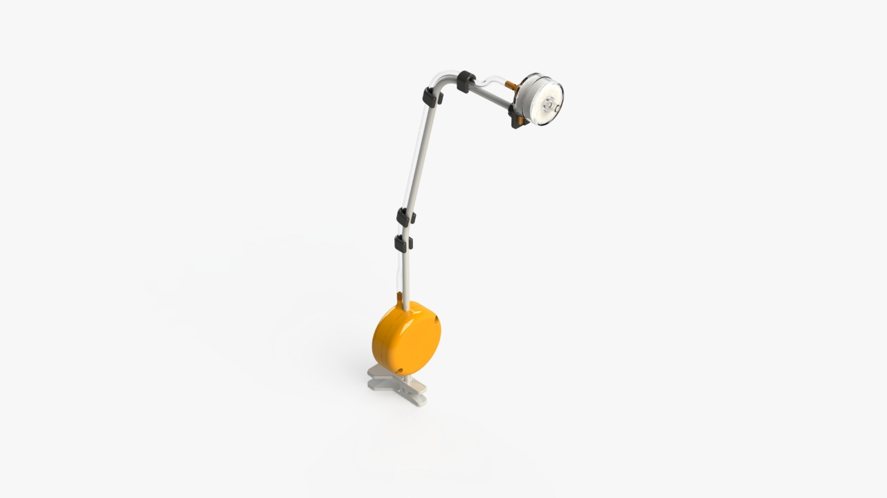
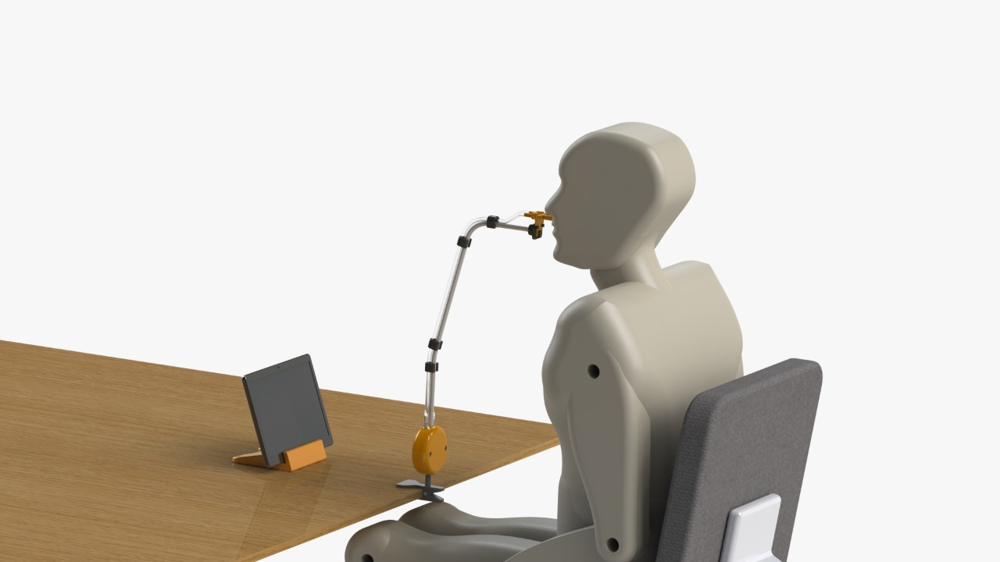

Sip & Puff switch
The Sip & Puff switch is a device which is activated by sipping and puffing, simulating the functions of “left and right-click”. When the user puffs or blows, the left-click function is activated, on the other side, when the user sips or inhales the right-click function is activated.
The device is compatible with Android, Windows, MacOS and Linux. It also allows the selection of items with the screen scanning functionality of OTTAA Project.


Materials:
Flexible support with a clamp.
Hydrophobic filter. Buy
2 screws M4x25mm.
2 nuts M4.
Transparent PVC glass hose pipe. ID:4mm, ED:7mm, L=400mm.
2 pressure switches MLP 500 C rank. Buy
PCB - Mouse Genius DX120. Buy
4 hose pipe -support fixings. C
Support-filter fixing. D
"T shaped" pipe. E
Procedure
3D Printing
Parts A, B, C, D and E are 3D printed with the follow general configuration:
Material: PLA.
Temperature of the hotend: 210-215 °C.
Temperature of the print bed: 50-60 °C.
Top and Bottom Layers: 3.
Perimeter Shells: 3.
Infill: 25%.
Support: 75°(only B.stl).
Dismantle Mouse Genius DX120
Take out the mouse PCB circuit board and remove the limit switches from the left and right-click. On those pins, then weld the wires on the common and normally open pin of the limit switch. On the other end, plug the pins of the pressure switches, the left click connected to the pressure switch that works with pressure, and the right one connected to the switch that works with vacuum. (Figure 1)
Place the pressure switches
Cut two 15mm pieces of PVC glass hose pipe. With the help of heat, introduce the hose into the short inlet of part E.
Place part E in part B as shown on the image (Figure 2), inserting the long inlet of part E through the upper hole of part B.
Place the PCB
With a glue gun, stick the mouse PCB circuit board to part A (Figure 3).
Introduce the USB cable through the bottom hole of the same housing.
Assemble housings
Place the flexible support in the corresponding space between both housings. Then, insert the nuts in the corresponding hole, and fix it with M4x25mm screws using an Allen key. (Figure 4)
Place the nozzle with a moisture trap.
Blueprints
The technical drawings of the parts to be printed are shown below: